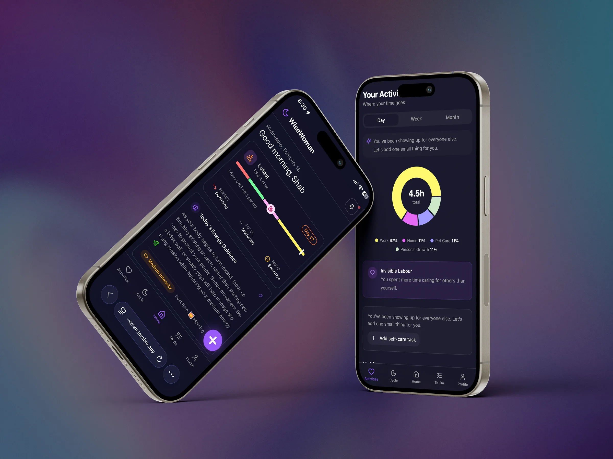
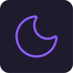
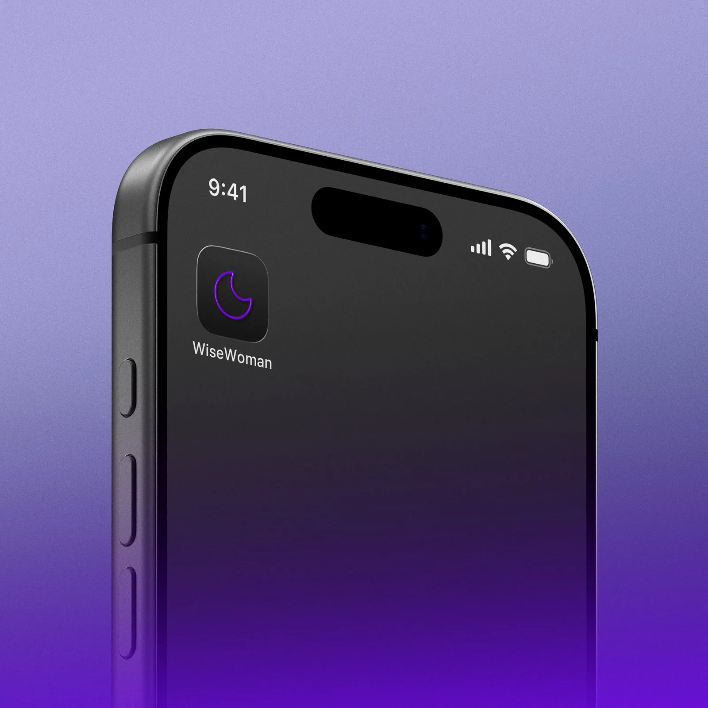
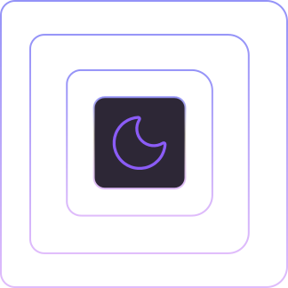
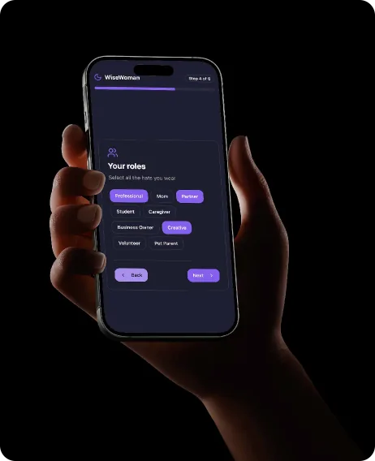
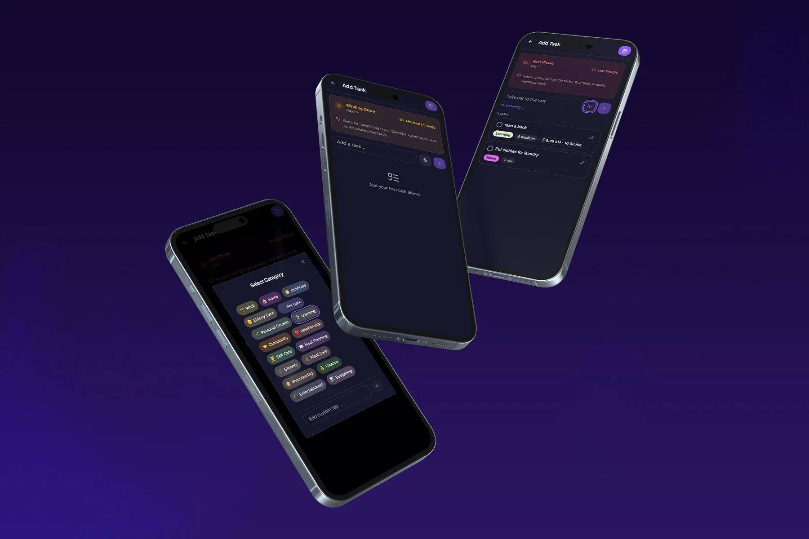
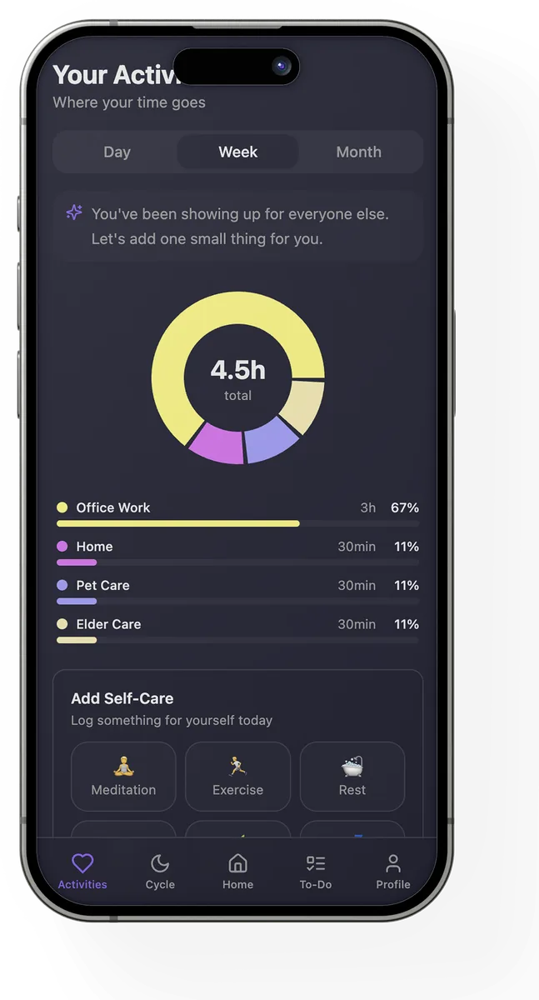
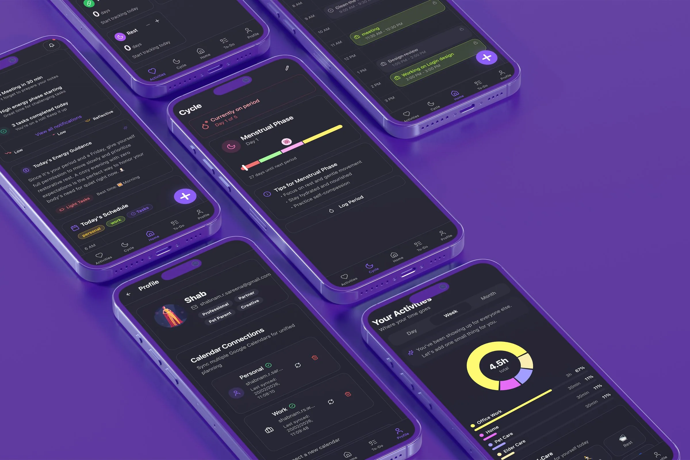

5 days
From first design to a live MVP
A daily planning system that reads the body, not just the calendar. It maps tasks to life roles, reads cycle-phase energy, and builds one schedule across work and personal life.
images/wisewoman-hero.webp
Planners assume one role and constant energy. Energy shifts across the cycle, and work, home, care and self all pile into one flat list.
A planning chain, not a to-do list: cycle phase, energy, role context and task grouping come together as one daily plan.
Rules handle 90%+ of the work. The LLM steps in only where rules fail, free speech and tone. The system assists, the user decides.
5 days from first design to a live MVP with real users, on Lovable, Gemini 2.5 Flash and Supabase.
Designing for a body that changes means a plan that flexes, not one that punishes the low-energy days.
Planners optimise for task completion. They assume a flat, steady person with one role and constant energy. That person does not exist.
Streaks, guilt mechanics, and rigid daily quotas punish the exact days when capacity is lowest. The system needs to flex with the person, not demand the person flex to the system.
No inflated numbers. Patterns were drawn from Reddit threads on productivity and women's planning, 3 direct conversations, and 12 app store audits across cycle and productivity tools. The signal was consistent enough to act on, not large enough to claim more than it was.
Managing the tool is a work !Productivity app review
PMS is a thing !!Reddit, r/productivity
Not for personal managementTask app review
Organising the task is a painApp store review
FemTech tracks the body. Productivity tools schedule the day. No category leader connects the two.
Cycle apps know energy shifts but do nothing with it. Planners structure the day but stay blind to the person using them. WiseWoman sits in the gap between them.
Every task moves through five stages before it reaches the schedule. The system reads context first, then plans.
The LLM never schedules autonomously and never overrides a task. It interprets and suggests. Every final decision stays with the person.
Text and voice do not share a pipeline. Each input type routes to the system that fits it. This is the most important technical decision in the product.
Cost to the end user. The platform absorbs all model cost through the Lovable AI Gateway. Routing most interactions through rules keeps that absorbable.
WiseWoman turns cycle awareness into everyday planning. Each screen cuts the effort of planning, matches the day's workload to the energy available, and structures tasks without manual setup.
Two violets carry the moon mark and key actions, a near-white carries text, and four deep indigo neutrals build the dark surfaces.
images/wisewoman-app-icon.svg
images/wisewoman-logo-on-mobile.webp
images/wisewoman-cycle-symbol.svg
The WiseWoman logo uses the moon as a symbol of cyclical change. Just as the moon moves through visible phases, energy and focus shift across the menstrual cycle. The mark represents adaptive planning that honours rhythm instead of forcing constant output.
The onboarding is intentionally structured to collect only high-signal inputs required for cycle-aware planning: basic identity, cycle data, and role context. Each step directly feeds the planning logic: cycle prediction, capacity mapping, and role-based task grouping. No excess preferences, no unnecessary profiling. The goal is fast personalisation with minimal friction.
images/wisewoman-onboarding.webp
images/wisewoman-scheduling.webp
Users add tasks via text or voice. The system auto-categorises them by role and intent, then offers cycle-aware nudges to guide timing and workload.
Final scheduling remains user-controlled.
Task capture is designed to reduce cognitive overhead from the start. Typed tasks are categorised by client-side rules and spoken tasks are parsed by Gemini, so every task is auto-mapped to a life role with a suggested energy intensity. This removes manual tagging and micro-decisions at the point of entry.
Over time, user edits and corrections act as feedback signals, refining classification and scheduling suggestions. The system gradually aligns with individual planning habits, making structuring feel increasingly intuitive rather than configured.
The habit section translates completed tasks and synced events into visible behavioural patterns. Instead of manually logging habits, the system derives insight from actual daily activity across roles.
It surfaces where time is spent, how workload is distributed, and what routines are forming over days and weeks. The goal is awareness, not streak pressure: helping users understand their lived patterns rather than optimise obsessively.
images/wisewoman-habit-reflection.webp
Your Activities tracks completed tasks and synced events across day, week, and month views. It visualises where time goes across roles without requiring manual logging. Users can also add small self-care actions from here.
images/wisewoman-ui-showcase.webp
The hybrid AI strategy kept the MVP stable and cheap to run.
A rule engine for text capture removed latency and token cost entirely.
The deterministic scheduler made the system predictable, so users trusted it.
Building for personal use first kept the scope honest and the hypothesis testable.
Splitting voice and text into two systems took several iterations to get right.
Cycle-phase energy guidance needed careful tone, not just accuracy.
The five-day scope forced cutting richer pattern recognition.
A personal hypothesis was hard to validate with limited secondary research.
Keeping the LLM assistive, never autonomous, took deliberate limits at every step.
Live MVP with real users. Vibe-coded on Lovable with Google OAuth and Supabase. Functional end to end: capture, categorisation, energy guidance, and scheduling.
Native deployment, advanced pattern recognition from longer activity history, and richer cycle-signal integration to sharpen the energy read.
It does not ask her to plan harder. It plans with her.
Open to product design roles and contract work.
Download resume